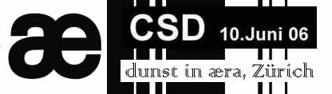

| CSD in Zürich, Switserland | 10. Juni 2006 |
 |
|
| dunst show med: Lene Leth Lebbe, Maria Maud, Tina Trash, Hairwerk, Gina Laktrans, Tove Hansen, Miss Fish, Nuclear Family, Søde Car O'lina, Liebling Siebling, Stimulundia, Dennis Agerblad, |
DJ: Stimulundia, Nikolaj Tange Lange, Miss Fish, VJ: Vibeke |
| www.aera.ch | |